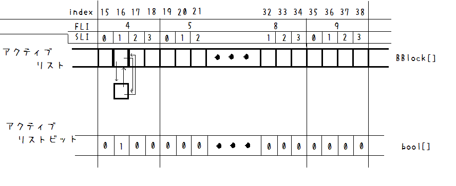

TLSFメモリアロケータ(理論編)
・ステップ
- BoundaryTag アルゴリズムの理論
- BoundaryTag アルゴリズムの実装
- TLSFメモリアロケータの理論 ←ここで解説する内容
- TLSFメモリアロケータの実装
・TLSFメモリアロケータ(理論編)
メモリを確保するアロケータの役割はおおまかに言うと
「プログラム開始時に一塊の大きなメモリブロックを確保して、
メモリ要求があったときにメモリを切り出して貸し出し、管理する。」
という役割です。
以下の図を見ながら考えてきましょう
まずひとまとまりの大きなメモリを確保しておきます。
例として1024byte確保したとします。

そこに「24byteのメモリが欲しい」という要求が来た場合、TLSFは適切な大きさのメモリを切り出します。
そのために2段階の検索を行います。
第一段階
まず「要求されたbyteを超える２のべき乗数」を求めます。
これは2進数bitで考えると簡単で、24byteの例に対しては
24 = 0001 1000
と、bitが立っている最大の位は下位から数えると5番目にあります。
ここは１０進数でいうと16で、24が16(=2^4)より大きく、32(=2^5)以下であることが一発で分かります。
この4を要求byte24に対するFLI - (First Level Index) と呼びます。
第二段階
24が16〜32の間にあることは分かりましたが、どのくらいの大きさのメモリを切り出せばいいでしょうか。
要求されたサイズ以上の大きさのメモリを返せればいいので32byte返しても問題はなさそうですがさすがに無駄が多いです（要求byte数が多くなると特に）
そこでこの区間をさらに分割します。
ここでも高速化のために２のべき乗に分割します。ここでは4(=2^2)分割することとし、
ひとつの区間あたり大きさは、(32-16)/4=4 となるので
| SLI |
区間範囲 |
| 0 |
16〜19 |
| 1 |
20〜23 |
| 2 |
24〜27 |
| 3 |
28〜31 |
と、24は3番目の区間に入ることになります。
このときの一つ前(後述)のインデックス"1"（0ベース）を24のSLI - (Second Level Index) と呼びます。
このFLIとSLIを高速で求めて要求byte数にgood fit（ぴったりではないが準適当）するメモリブロックを求めるのがTLSFです。
best fit（ぴったり適当）なメモリを返すわけではないのでフラグメンテーションは起こります。
しかしそれよりも速度を重視するのがこのアルゴリズムの特徴でしょう。（導入部で言った速度重視とはこのこと）
フリーリストとアクティブリスト
切り出したメモリブロックを管理するために、「使用中」や「解放」・「不要」などの扱いについて考えていきます。
BoundaryTagBlockにはまさにそのフラグを変数としてもっています。
BoundaryTag アルゴリズムについては前のページを参照してください。
ここで管理の立場からフリーリストとフリーリストビットというものを導入します。
フリーリストはBoundaryTagBlockが保持している運用メモリのサイズによって分類(index)される双方向リストの基点（ダミー）の配列です。
追随してフリーリストビットはあるindexにおけるフリーリストが(ひとつでも)存在しているかを示すフラグの配列です。
どちらも配列の長さは同じです。
運用メモリのサイズによる分類とははじめに述べたFLIとSLIのことで、指定サイズがどの区間のindexかを表します。
そのindexを求めるためにはFLIとSLIを求める必要があります。
FLIとSLIは指定サイズのみから求まります。
bit演算を多分に用いますので苦手な方はこの機会に身につけてください。
FLIの求め方
まず、forを使わないで立っているbitをカウントする関数byte GetBitCount(ulong value)を作ります。
とりあえず32bitのulongではなく8bitのbyteについて考えてみましょう。
たとえば24を考えます。24は二進数では次のようになります。
24 = [0001 1000]
GetBitCountに24を渡して"2"という返り値が欲しいのです。
では実際にどうするかというと次のようにします。
まずvalを元の値val=[0001 1000](=24)として、[0101 0101](=0x55)との論理積& をとります(=val1)
val = [0001 1000]
& [0101 0101]
val1= [0001 0000]
また、valを１だけ右シフトした値と[0101 0101]との論理積をとったものをval2とすると
(val >> 1)= [0000 1100]
& [0101 0101]
val2 = [0000 0100]
val1とval2の単純な和とると、次のようになります。
val1 + val2 = [0001 0100]
2桁づつ区切ってみると、元々の24=[0001 1000]のbitが立っている箇所の個数が（2進数で）個々に現れています。
val=val1 + val2 = [0001 0100]として
続けて同じように今度は[0011 0011](=0x33)に対して同様の操作を行います。
ただしval2を作るときの右シフトは２とします。
val = [0001 0100]
& [0011 0011]
val1= [0001 0000]
(val >> 2)= [0000 0101]
& [0011 0011]
val2 = [0000 0001]
val=val1 + val2=[0001 0001]
今度は4桁区切りでのbitの個数が出てきました。（どちらも1ですが・・・）
最後に[0000 1111](=0x0f)に対して行います。右シフトは4です。
val = [0001 0001]
& [0000 1111]
val1= [0000 0001]
(val >> 4)= [0000 0001]
& [0000 1111]
val2 = [0000 0001]
val=val1 + val2=[0000 0010]
はい、ご所望の"2"が求まりました。
「逆に計算多くなってんじゃねえか」とお思いでしょうが、bit演算は高速です。
よってbit演算部を無視すると正味3回の和演算だけで済んでいます。
forで愚直にいくとなると8回回りますし、何よりifが入ります。これでは遅いです。
8bitで和演算3回、16bitなら4回、32bitなら5回とbitが多くなればなるほど差がでるのはべき乗とlogに通じるものがあります。
今回はメモリアロケータという特性上、32bitのulongに対応するものを作っておきます。
説明用にvalを用いて演算しましたがひとつの式にまとめてもOKです。その際は計算の優先順位に気をつけて（）をつけるのをお忘れなく。
//立っているビット数をカウントする(32bit ulong)
int TLSFMemoryAllocator::GetBitCount(ulong value){
ulong count = (value & 0x55555555) + ((value >> 1) & 0x55555555);
count = (count & 0x33333333) + ((count >> 2) & 0x33333333);
count = (count & 0x0f0f0f0f) + ((count >> 4) & 0x0f0f0f0f);
count = (count & 0x00ff00ff) + ((count >> 8) & 0x00ff00ff);
return (count & 0x0000ffff) + ((count >> 16) & 0x0000ffff);
}
それでは本命のFLIについて、FLIを求める関数int GetMSB(ulong value)について考えていきます。
MSBはMost Significant Bitのことで、とりあえず今は「FLIと同じようなもの」と認識しておいてください。（あとで微妙な違いを説明します）
MSBは立っている中で一番上位のbitのことです。これを取得します。
また24を例にとります。val=[0001 1000](=24)ならばMSBは"4"(0ベース)と出て欲しいわけです。
これをbit演算で簡単に求める操作は以下のようになります。
まず元のbit列と同じval1=val=[0001 1000]と右へひとつシフトしたval2=(val >> 1)=[0000 1100]との論理和をとります。
val=(val1 + val2)=[0001 1100]
続いて右シフトを2として繰り返します。
val1 = [0001 1100]
val2 = [0000 0111]
val = (val1 + val2) = [0001 1111]
同様に右シフトを4とすると。
val1 = [0001 1111]
val2 = [0000 0001]
val = (val1 + val2) = [0001 1111]
最大位のbit以下全てのbitが立ちました。あとはこれを先ほどのGetBitCountにぶち込んでカウントすれば"5"とすぐ出ます。
0ベースなのを忘れずにマイナス1すれば"4"が求まりました。
それではMSBとFLIは何が違うのでしょうか？答えは２のべき乗ぴったりの数の扱いです。
例えば32 = [0010 0000]について、MSBは5、FLIは4です。（どちらも0ベース）
FLIに関しては、FLIは対象となる値valに対してval≤2^(n+1)である最小のnと等しいものです。
つまりFLIは2^nより大きく〜2^(n+1)以下のどのnに分類されるかを表す指標です。（2^n < val ≤ 2^(n+1)）
一方MSBは2進数の桁上がりの性質からある数が2^n以上〜2^(n+1)未満であることを示す分類です。（2^n ≤ val < 2^(n+1))
具体的な計算は省きますが32周辺のFLIとMSBについて表にまとめます。
| 数値val | MSB(val) | FLI | MSB(val-1) |
| ・ | ・ | ・ | ・ |
| 31 | 4 | 4 | 4 |
| 32 | 5 | 4 | 4 |
| 33 | 5 | 5 | 5 |
| ・ | ・ | ・ | ・ |
というわけで表中でネタバレしてますがMSBをFLIに変換するにはval-1をGetMSBに渡す必要があります。
２のべき乗ぴったりでなければMSBとFLIは共通です。未満や以下で１だけずれているだけなのでval-1すれば解決します。
これによって（まー心配ないと思うけど）0を渡すと-1でunsigned longにひっかかるのでエラーチェックが必要です。
こうした±1のズレはindexの0ベースも相まって非常に発生しやすいうえに修正もしにくいという厄介なものなので注意が必要です。
ともかく、これでFLIを求めることができました。
//2^x<=valueとなるxを返す(MSB)
int TLSFMemoryAllocator::GetMSB(ulong value){
if(value == 0) return -1;
value |= (value >> 1);
value |= (value >> 2);
value |= (value >> 4);
value |= (value >> 8);
value |= (value >> 16);
return GetBitCount(value)-1;
}
SLIの求め方
SLIは第一カテゴリであるFLIの範囲をさらに分割した第二カテゴリをあらわすものでした。
ここでは4(=2^2)分割しているため、例えばFLI=4の範囲については下の表の通りになります。
| SLI |
区間範囲 |
| 0 |
16=[0001 0000]〜19=[0001 0011] |
| 1 |
20=[0001 0100]〜23=[0001 0111] |
| 2 |
24=[0001 1000]〜27=[0001 1011] |
| 3 |
28=[0001 1100]〜31=[0001 1111] |
さて、肝心のSLIですが表中に赤く示してあるところが二進数でいうSLIに一致します。
同じメモリ帯なら共通かつ4区画でそれぞれ異なり連番である上にbit演算でとりだせそうです。
ではまた24=[0001 1000]を例にとって考えましょう。これのSLIとして"2"が出ればOKです。（実際にはval-1を渡すのでここでは要求byteは25）
まず、SLIを求めるためには赤いところ以上のbitが立っているとまずいです。
SLIは必ず分割数（ここでは4）より小さい必要があるため、値が大きくなってまずいですし、表中の赤字より上位のbit情報は意味を持ちません。
そこでまずbitマスクとしてmask = ~([1111 1111] << FLI)を考えます。今24のFLIは4なのでmask = ~([1111 0000]) = [0000 1111]
これを論理積演算時にマスク掛けすればFLI以上のbitは無効化されます。(val1)
次に分割数4について、4=2^2ですがこの指数べきをNとすると 4=2^N,N=2と表現されます。
マスク掛けした後のbit列にFLI-Nだけ右シフトをかけると赤字の部分が取り出せます。(val2)
mask = ~([1111 1111] << FLI) = [0000 1111]
val = 24 = [0001 1000]
val1 = val & mask = [0000 1000]
val2 = val1 >> (FLI-N) = [0000 0010] = 2
よってSLIを得るために必要な情報は、対象のサイズval,そのFLI,分割数を示すNの３つです。
Nは定数として、さらにFLIと同じ理由でval-1を用いて次のように求めることができます。(32bit)
//第二カテゴリーインデックス(SLI)を返す
byte TLSFMemoryAllocator::GetSLI(uint size,byte fli){
// 最上位ビット未満のビット列だけを有効にするマスク
uint mask=~(0xffffffff<<fli);
// 右へのシフト数を算出
uint rs=fli-N;
// 引数sizeにマスクをかけて、右へシフトすればSLIに
byte sli=(size & mask) >> rs;
return sli;
}
フリーリストとメモリ切りだし
フリーリストとフリーリストビットの配列は全部で何個あるでしょうか。
答えは「初期に確保した一塊の全体メモリブロックのFLIとSLIに対して(FLI*2^N+SLI)個」です。
まずFLIで分類し、その後2^NにSLIでさらに分類しているのでこうなるのは理解できるかと思います。
indexとしては0ベースなのでFLI*2^N+SLI-1がfIndexになります。
結構頻繁に使うので関数化しておきましょう。FLIとSLIをうけとりindexの番号を生成する関数です。
//フリーリストインデックスを求める
byte TLSFMemoryAllocator::GetFIndex(byte fli,byte sli){
return fli*pow(2,N)+sli-1;
}
フリーリストに関わる管理変数は種類が多く、その役目をしっかり把握しておくことが重要です。
ちょっと実際に運用する時のように初期状態として大きなメモリブロックを確保したとしましょう。
そうしてフリーリストに関わる全ての変数を初期化した段階の図が下のようになります。
（右は型の名前、bool[]型のtrue,falseは便宜上0,1で表現、左の図中の[ ]はその固まりでひとつの要素ということ）

byteは8bitのunsigned intですがその下位4bitしか使いません。
TLSFのメンバ変数として以下のものを定めます。
- フリーリストブロック配列先頭ポインタ BBlock* freeList;
- フリーリストビット bool* freeListBit;
- フリーリストビット(第一カテゴリ) uint freeListBitFLI
- フリーリストビット(第二カテゴリ) byte* freeListBitSLI
例えば1024byteのメモリを初期にnewしておくとすると、まずそのFLIとSLIを求めます。
1024のFLIは9,SLIは3なので一番初めにフリーリストに一つだけフリーブロックを入れておきます。
index = FLI*2^N+SLI-1 より1024のFLI、SLIからindexを求めるとindex = 38 です。
よってindex = 38のところにあるフリーリストにひとつBBlockを(placement newで)生成して双方向リストを結びます。
| FLI = 9 |
| SLI |
区間範囲 |
| 0 |
512〜639 |
| 1 |
640〜767 |
| 2 |
768〜895 |
| 3 |
896〜1023 |
しかしいきなり900byteもメモリ要求はこないでしょう。
大抵4byteや8byte等の小さい大きさのものが大量にくるはずです。
第二カテゴリの分割数によって最小のメモリブロックの大きさは決まりますが、
初期段階では4byteや8byteのFLI,SLIに対応するフリーリストビットはfalseです。（indexに対応するフリーリストにフリーブロックがない）
また、例として24byte要求がきたときを考えます。
方針としてはBoundaryTagの特性を活かして初期状態の大きなメモリを24byte用に分割して切り出します。
初期段階では24byteのFLI,SLIに対応するフリーリストビットはfalseです。（indexに対応するフリーリストにフリーブロックがない）
この時点でフリーリストビットを上方へ辿ってフリーブロックが存在するフリーリストの要素を探しにいきます。
では、forでまわして探索しましょうか？いえいえここもbit演算で高速化できます。（そのためのフリーリストビットです）
24は(FLI,SLI) = (4,1)です。
まず探索第一段階として同FLI内の上位SLIにbitが立ってないかを探します。
これは第二カテゴリフリーリストビットを用いて、さきほどのSLIを求める際にやったようにSLI以上を有効とするmaskを作り論理積をとります。
//同fli内の上位sliを返す(第二カテゴリ)
byte TLSFMemoryAllocator::GetFreeListSLI(byte fli,byte sli){
//部分フリーリストバイト(fli内の4byte)
byte rb=freeListBitSLI[fli];
//sli以上が立っているマスク
byte sb=0xffffffff << sli;
//部分フリーリストビットのsli以上に立っているビットがあるか
byte rsb= rb & sb;
if(rsb==0){
return -1;//同fli内に上位sliは無い
}
//同fli内の上位sliを返す
return GetLSB(rsb);
}
byte返り値に対して-1を返すのはちょっとあぶないけどbyteのMAXと一致するので判別はできるかと
GetLSBは最小bit(Least Significant Bit)を返すものでGetMSBの逆です。実装もほぼ逆です。
//2^x>=valueとなるxを返す(LSI)
int TLSFMemoryAllocator::GetLSB(ulong value){
if (value == 0) return false;
value |= (value << 1);
value |= (value << 2);
value |= (value << 4);
value |= (value << 8);
value |= (value << 16);
return 32-GetBitCount(value);
}
上位SLIの中の最小を求めるためですね。これでforを使わずに探索できました。
24の(FLI,SLI) = (4,1)に対して、(FLI,SLI) = (4,2),(4,3)にフリーブロックがあった場合にGetFreeListSLIは-1ではなく2,3の新しいSLIを返します。
初期段階ではこのふたつの場所にもフリーブロックは存在しないので、さらに上方に探索する必要があります。
次に探索第二段階として上位FLIにbitが立ってないかを探しにいきます。
これには第一カテゴリフリーリストビットを用います。第一カテゴリフリーリストビットはuint型のただの整数です。
これをbit列でみてSLIと同じように上位を探します。
//指定Fliより上位のFliを返す(第一カテゴリ)
byte TLSFMemoryAllocator::GetFreeListFLI(byte fli){
//fli以上が立っているマスク
uint fb=0xffffffff << fli;
//全体フリーリストビットFLIのfli以上に立っているビットがあるか
uint rfb= freeListBitFLI & fb;
if(rfb==0){
return -1;//上位のFliが無い（エラー）
}
//上位fliを返す
return GetLSB(rfb);
}
もしこの関数が-1を返した場合、確保したメモリの空きはもうないのでエラーです。
今はfreeListBitFLI = [・・・000001]と（一番右を最上位と見て）最上位だけ立っていますので新しいFLIはFLI=9となります。
上位FLIを得たあとは、その新しいFLIとSLI=0とともにGetFreeListSLIへ放り込んで立っている最小のSLIを得ます。そうすると新しいSLIとしてSLI=3を得ます
これでフリーリストビットが立っている（フリーブロックが存在する）indexが分かりました。
indexはindex=FLI*2^N+SLIです。今(FLI,SLI)=(9,3)よりindex=39です。ここにはフリーブロックがひとつ以上存在します。（初期フリーブロック）
さて、24byte要求に対してこの1024byte（初期）フリーブロックは大きすぎます。
よって24byteと1000byteのブロックに分割（デバイド）します。
分割後の余り、1000byteのほうはまた同様にFLI,SLIを求めて適切なフリーリストに繋げておきます。ビットフラグ関係も更新します。
使われる24byteのほうはフラグをオンにして、運用メモリの初期化などをしたあとに外部にそのポインタを渡します。
さらにアクティブリストに入れておきます。
アクティブリスト、およびアクティブリストビットはフリーリスト、フリーリストビットと対になるものです。
もし探索する必要なく要求サイズのFLIとSLIの場所にあった場合はそのままそのBBlockのフラグをonにしてアクティブリストに入れます。
アクティブリスト、およびアクティブリストビットはフリーリスト、フリーリストビットと対になるものです。
- アクティブリストブロック配列先頭ポインタ BBlock* activeList;
- アクティブリストリストビット bool* activeListBit;
フリーリストと同様にFLI,SLIからindexを求めておきます 24byteは(FLI,SLI) = (4,1)ですので、
アクティブリストのindex=16のところにくっつけます。

メモリ解放
外部に渡したポインタが不要になった場合、その領域を管理していたBBlockをアクティブリストからフリーリストへ移動させる必要があります。
まずその管理BBlockを求めます。不要となったポインタpを受け取り、BoundaryTagの特性からそこからsizeof(BBlock)だけ前方へ戻ればBBlockポインタのthisが取得できます。これをb1とします。

アクティブリストからフリーリストへ移動させる前に、前後とのマージを行います。
メモリブロック上ではリスト等は関係ありません。線形に隣接して存在しているはずです。
まずb1から前方へ辿り自分に隣接しているBBlock b0と、後方へ辿り自分に隣接しているBBlock b2を取得します。それぞれ運用ポインタp,終端タグのポインタcを持ちます。
このふたつの隣接するBBlockのうち、フラグがfalseのものは使用中でないのでマージできます。
それぞれ判定してマージを行ってからサイズを更新し、そのサイズに応じたフリーリストへ再び登録します。
今回は上記で確保した24byteをそのまま解放したとして、例にとってみましょう。
初期に確保する1024byteもBBlockのひとつとして登録されています。フラグは当然false（未使用）
さらに前後の判定用として運用サイズ0byteのダミーブロックでこのメモリブロックを挟んでおきます。これらのフラグはtrue（使用中）にしておきます
こうすると判定しやすくなります。
さて、24byteの解放要求がくる前はこのようになっています。

赤がフラグon、黒がフラグoffのBBlockです。
24byteを管理しているBBlockのフラグをそのままオフにすると黒の領域が隣同士並びます。よってこれを右マージして24 + 1000 = 1024 の大きなBBlockに統合します。

前方は（ダミーが）フラグonなのでマージしません。
リスト関連のフラグは初期状態と同じになります。
以上で基本的なTLSFメモリアロケータの理論はおしまいです。
次のページの実装ともあわせてじっくり読み込んで分かった気になってください（＾＾；
->TLSFメモリアロケータ（実装編）へ